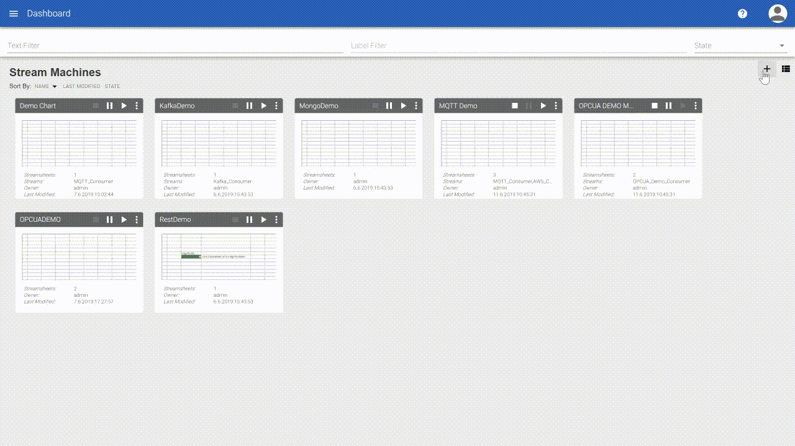
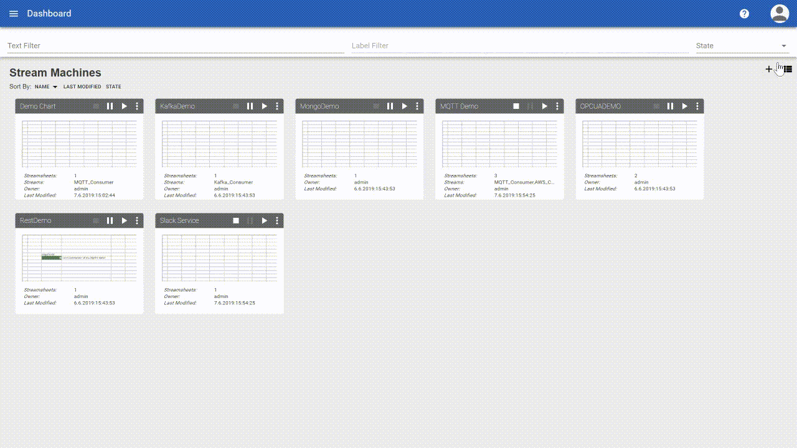
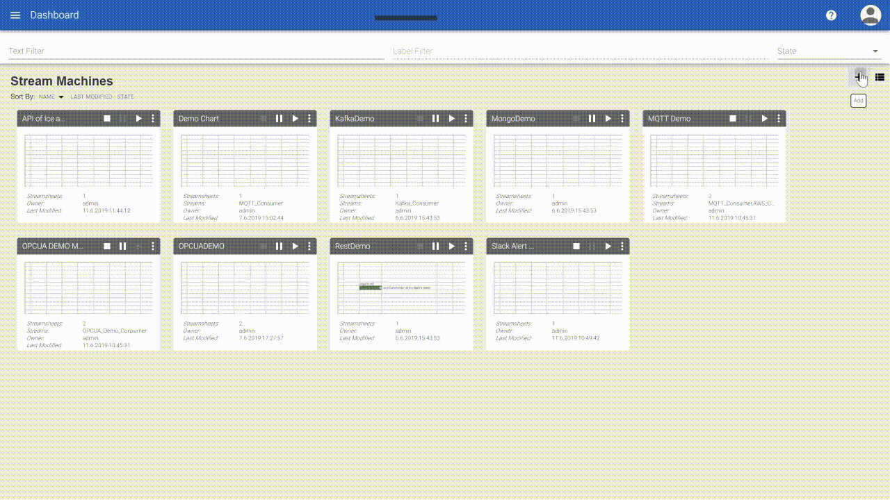
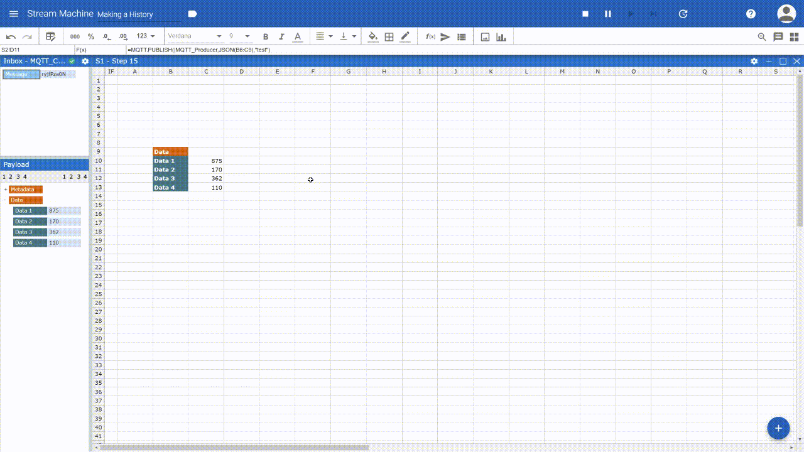
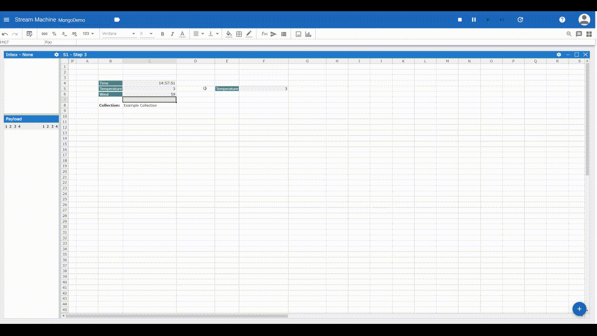
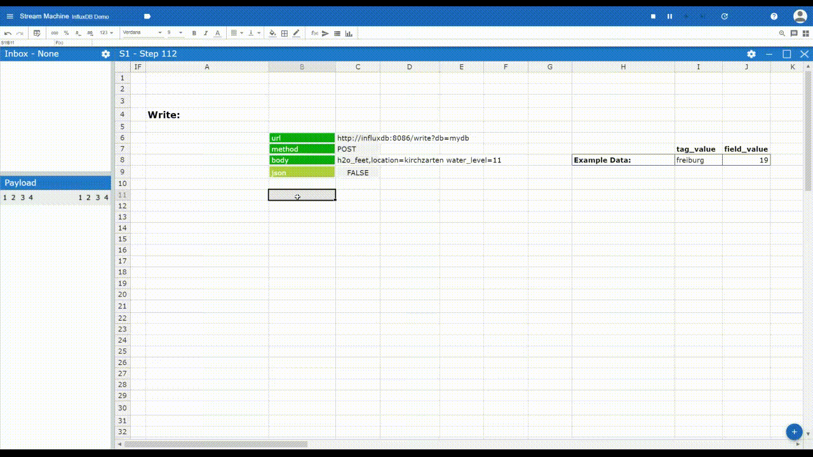
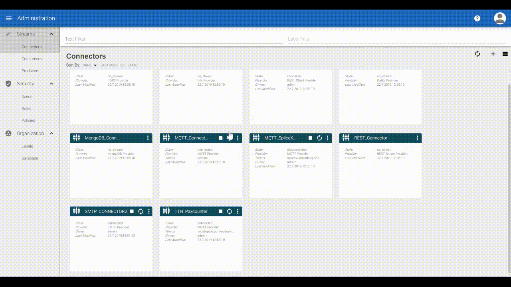
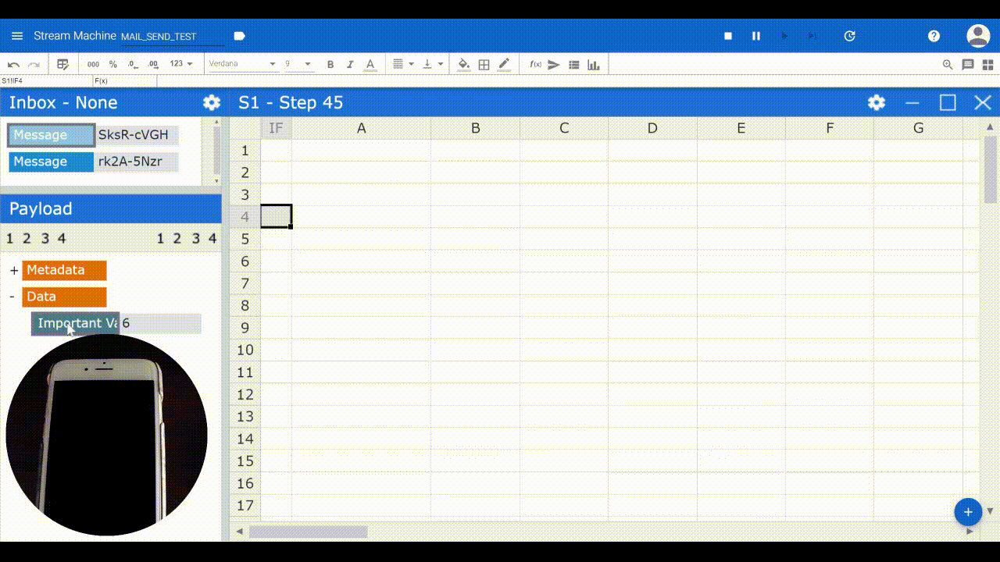

Examples¶
REST Request¶
This tutorial covers two different kind of REST Calls one is POST and the other is GET. The differences are that with a “POST” information is transmitted from the REST Client to a server and a “GET” transmits information to the REST Client from the server. To add a restrequest function to a Streamsheet you will need a Connector and a Producer, based on the REST Client Provider. Start by creating the Connector in the Connector Dashboard in the Administration Menu. You can leave all fields empty to be able to utilize this Connector for any URL. If you want to create specific Connectors for every webpage, type in the Base URL. Same goes for the Producer. Create a Producer based on the just created Connector and leave it empty. We can now select the Producer within the Function Wizard.
 Creating Streams for REST
Creating Streams for REST
1. Method “Post”: As an example, for a REST Request with the method “POST”, we will create an alert service for Slack. Slack is a messenger, which offers the possibility to add self-made applications. This option will be used to add an Alert Application to a Slack channel, posting status updates.
To begin create such an App in Slack and add an Incoming Webhook. This generates the REST.Request URL we will be posting information to. Choose a Channel on Slack to add your Application to. This is where we will post the information to. Now we can start building an App in Streamsheets. Create a new Stream Machine and create a JSON Range with the key Value being “text” and the Value being any message you would like to send. Create a REST Request function over the Function Wizard and select “POST” as the method. Add the created URL and select the JSON Range as the body. Choose a Target (e.g. OUTBOX()) for the response message of the server. Now with every new Step, the Stream Machine will send your message to Slack 😊
 REST Request with method “POST”
{kind=link}
2. Method “GET”: The “GET” method is very similar to the “POST” method, but in this case we do not need to define any message, because we will be consuming messages. A good example is the “API of Ice and Fire” https://anapioficeandfire.com/. It is an REST Request based online wiki for Game of Thrones related information. Depending on the URL, different Information can be accessed and displayed. Lets choose the following URL: https://anapioficeandfire.com/api/characters/583 It displays all information regarding Jon Snow in a JSON-Object. So lets again create a new Stream Machine. Add a REST Request Function with the help of the Function Wizard. Enter the URL, select “GET” as the method and chose the Target, where the information should be displayed (e.g. INBOX()). Confirm your input by clicking “OK”. After starting the Stream Machine the requested information will now appear in the Target Range.
 REST Request with method “GET”
REST Request with method “GET”
OPC UA¶
This simple Tutorial shows how to read information of an OPC UA Server. To begin with we have to create Streams, which are connected the OPC UA Server of our choice.
 Create Streams for OPC UA
Create Streams for OPC UA
Open up the Administration Menu and create a new OPC UA Connector. Enter the URL of the Server you want to connect to. In this tutorial the OPC UA Server is in the local network. You will need your own OPC UA Server or go to http://opcuaserver.com/ where you can find a series of open OPC UA Server.
OPC UA Consumer: Open up the Consumer Dashboard and create a new Consumer, based on the created Connector. Enter the Node ID you want receive and safe your changes (the polling interval defines the interval where the Consumer requests new data from the server). Switch to the Producer Dashboard and create a Producer, again based on the newly created Connector.
Now we are ready to receive and send messages. Create a new Stream Machine and select the newly created Consumer. Just start the machine and the Consumer will instantly forward messages into the Inbox.
OPCUA.READ: A second way to receive OPC UA Messages in a Streamsheet is over the OPCUA.READ function. Create a new Streamsheet by clicking the plus sign in the bottom right corner and select a cell. Open up the Function Wizard, select the OPCUA.READ function and the created Producer. Enter the Node ID and the Target (e.g. INBOX()) and confirm your input by clicking “OK”.
With every new calculation step an OPCUA.READ will prompt a new message in the Inbox.
 Recieve OPC UA Data over Inbox Consumer and OPCUA.READ
{kind=link}
OPCUA.WRITE: It is also possible to update existing OPC UA Variables with the OPCUA.WRITE formular. Similiar to before, use the Function Wizard and select OPCUA.WRITE. Choose the right Producer, add the NODE Id and Target Range.
 Change a node value on a OPC UA server with OPCUA.WRITE
{kind=link}
History¶
Often it is important to not only work with single real-time data points in the moment, but to build a history and work with a series of values. The following example shows how to create a short (stepwise) data history.
Note
Every sheet is calculated from left to right and from top to bottom. Consequently, cell A1 is calculated first followed by B1, C1 etc. proceding in the next rows in the same manner. Thanks to this concept, we can use references to create a history of values.
The cell at the very bottom references to the data input and the cells above the reference to the cell below. As higher cells are calculated first, they fetch the values of lower cells before these are calculated. In the end the last cells take the latest data input. Effectively it looks as if new values enter the history at the bottom and move up before leaving the series at the top.
 Create data history in a Streamsheet
{kind=link}
MongoDB¶
To store data and retrieve information Streamsheets are able to connect to a MongoDB. Here you can learn how to add a MongoDB to your current Streamsheets installation.
Start connecting the MongoDB to your Streamsheets by setting up a MongoDB Connector in the Administration.Check the “External Host” checkbox and enter the URL (or if working with Mongo for Docker the container name) in the Host(s) field. All other settings are optional. Streamsheets offers five Mongo specific functions within the Function Wizard: MONGO.STORE(), MONGO.COUNT(), MONGO.DELETE(), MONGO.QUERY() and MONGO.AGGREGATE(). Setup a Producer on top of the just created Connector and you are ready to go.
MONGO.STORE: To add new key value pairs to the database open up a Stream Machine and use the function MONGO.STORE. Select the just created Producer and type in any collection name you want. (If the collection is not existent it will automatically create one.) In the “document” field add a JSON Range of your choice to store in the collection.
MONGO.DELETE: To delete key value pairs from the database use the function MONGO.DELETE. The elements defined in the query will be deleted.
MONGO.QUERY, MONGO.COUNT & MONGO.AGGREGATE: These three functions all have similar tasks. They all retrieve information from a collection. MONGO.QUERY is used to get raw information. MONGO.COUNT counts all entries in a collection depending on the inserted JSON Range. MONGO.AGGREGATE offeres a wider range of operations to choose from. Different aggregation methods can be used to summerize data. Mongo offeres a variety of operations e.g. covering comparative methods (“equal” or “greater than”) or logical methods (“and” or “not”), which all can be incooperated in the Aggregate JSON. More query operators can be found here.
 All five Mongo functions used in one GIF.
{kind=link}
InfluxDB¶
To store data and retrieve information Streamsheets are able to connect to a InfluxDB. Here you can learn how to add a InfluxDB to your current Streamsheets installation.
First of all we start by providing a REST Client Connector and the corresponding Producer. If these are not yet available, go to the Administration menu and create a new Connector and Producer. If you have any questions we recommend to have a look at the REST.REQUEST tutorial.
URL: http://influxdb:8086/query?q=CREATE DATABASE <Database name>Example URL: http://influxdb:8086/query?q=CREATE DATABASE mydb
To create a database it is sufficient to execute the REST.REQUEST once.
Syntax: <measurement>[,<tag_key>=<tag_value>[,<tag_key>=<tag_value>]] <field_key>=<field_value>[,<field_key>=<field_value>] [<timestamp>]Example: h2o_feet,location=freiburg water_level=4
 Write Data in InfluxDB with the REQUEST function
{kind=link}
URL: http://influxdb:8086/query?db=<Database name>&q=<your query>Example URL: http://influxdb:8086/query?db=mydb&q=SELECT * FROM “h2o_feet” WHERE time > now() - 1m
Thats it! Now you receive the Data in your payload. It`s time to process the Data in this or another Streamsheet!
MAIL.SEND¶
In This Tutorial we will send E-Mails to a Mail Account from our Streamsheet, using an SMTP Client.
First of all, create an SMTP_Connector. Therefore click on the Administration Menu and navigate to Connectors to create a new Connector, with a “SMTP Provider”. To be able to use the SMTP_Connector, the Host-address, the Port and the Security Protocoll of the Mail Service that is used, needs to be typed in. For example the host-address for Gmail is “smtp.gmail.com”, the Port is 465 and the Security is SSL/TLS. (This may differ from other Mail-Services, their access data can be find on the internet)
 Create SMTP_Connector
{kind=link}
For the next Step change to Producers and create a new Producer, using the previously created Connector. Now enter the sender mail address as User name and add the password below.
Even if the whole Setup is correct, there is a high chance that it will fail! For instance Gmail is blocking the access of this app, because it’s using a “low” security level. To give Streamsheets access to Gmail, enable “allow low security applications” manually on the Gmail website. After that the Connector and the Producer should be connected!
Now we are ready to switch to a Streamsheet. To insert the “MAIL.SEND” function in the Streamsheet, use the Function Wizard and select “MAIL.SEND” as the function and the previously created Producer as Stream. For “Text, Subject, TO” etc. either type it in directly or refer to a cell on the sheet. That`s it!
To prevent spam we recommend adding a condition to the MAIL.SEND function 😄
 Sending mail`s with a condition
{kind=link}
Forum¶
To see even more possibilities of data histories (based on steps and based on time) take a look at our Streamsheet Forum. To access and work with larger series of data connecting to and using a database is usually the best approach.